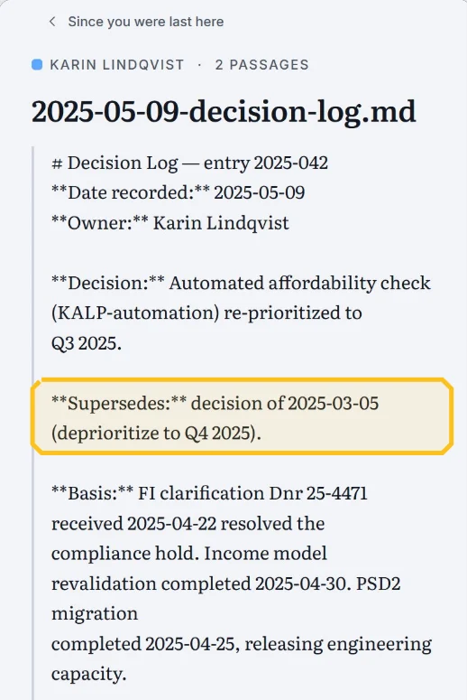
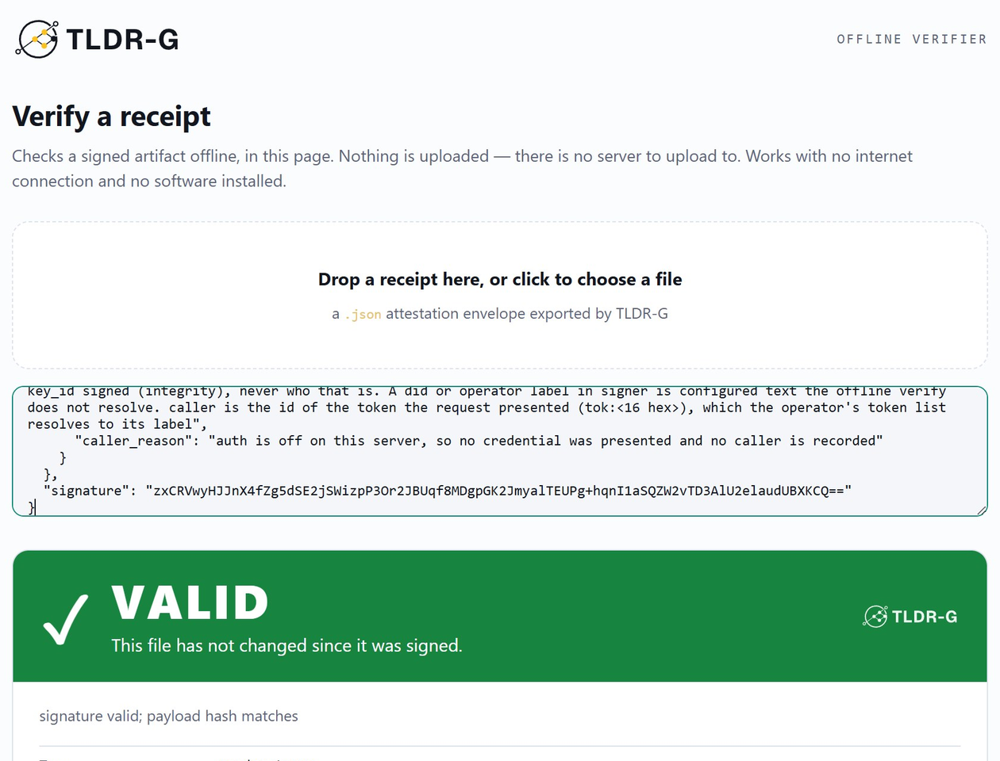
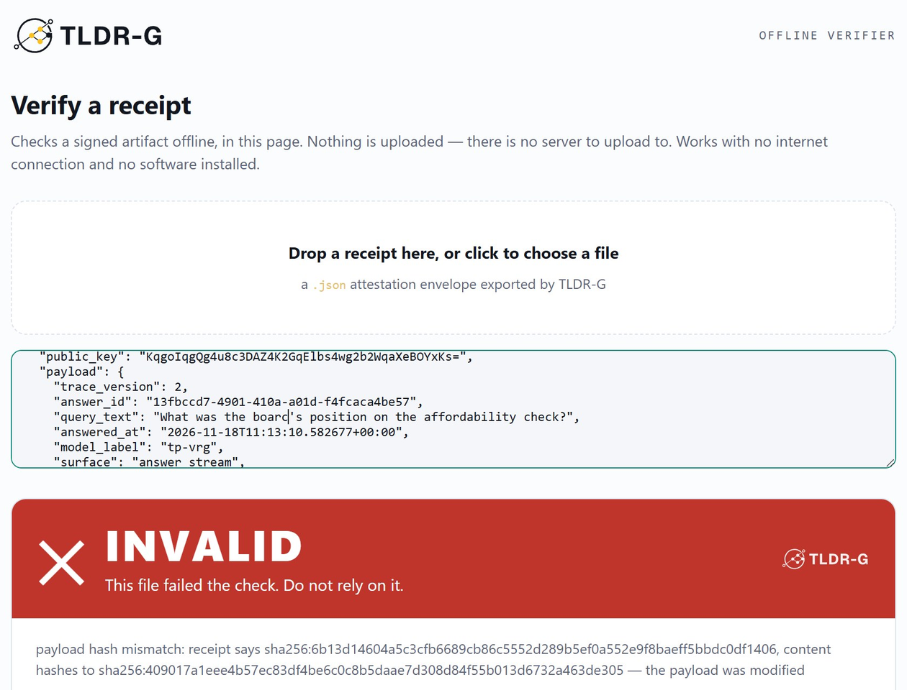

Ask your own documents
Answers you can check.
TLDR-G answers questions from your documents and shows its work: the passages each answer used, the later decision that replaced an earlier one, and a signed receipt anyone can verify offline. It runs on your machine.
Know what matters. See what changed. Prove why.
Free · Windows 10/11 · Runs on your machine · Local or cloud model, your choice
See it in three minutes
Three questions about a made-up lender's documents. With each answer, one thing you can check: the sources it used, whether the decision still holds, and a signed receipt.
The right document. The wrong decision.
Finding a document that looks like the question is easy. The hard part is knowing which one decides it. A model can quote yesterday's decision perfectly, and you have nothing to show what it was given.
TLDR-G gives you the answer and three ways to check it.
Three checks on every answer
Know what matters
Every answer lists the passages it was given. One click opens each one at its source, in the exact document.
See what changed
When a decision was later reversed, you read the line that reversed it, highlighted in the document itself.
Prove why
Each answer gets a signed receipt of the question and its evidence, made before any model is asked. Anyone can verify it offline.

See what changed, in the document itself
The answer said the March decision was reversed in May. Opened from the answer, the decision log shows the line that reverses it.
A frame from the demo film. Hägervik Kredit is a lender we made up.
Verify the receipt yourself
The receipt proves what went in. Whether the answer is right stays your reviewers' call. The verifier is open source and needs no server and no account, so you can check our work without trusting us.


Try it on one workflow of your own
Bring one set of documents you need to get right: contracts, engineering specifications, policies, a case file. TLDR-G is a desktop app for you and your documents.
It runs on your hardware, and the app shows on every page where your evidence is sent. Answers come from a local model or a cloud model you choose. Or take just the evidence, with no model at all.
Get it
Download free (Windows)
The desktop app, plus an MCP server and an HTTP API for your own AI tools.
Requirements (v0.3.2): Windows 10/11 (64-bit). An NVIDIA GPU with ≥4 GB VRAM is strongly recommended (GTX 1060 6 GB or better); it runs on CPU only, but more slowly. 16 GB RAM recommended. About 12 GB of free disk, including about 4.6 GB of models that download once on first launch.
See it on your documents first
A thirty-minute call: you bring the workflow, we show you the answers and the checks.
Developers: the open SDK (Apache-2.0) has the receipt formats and the offline verifier. Setup guides are on the Learn page.
Follow the releases
New releases and what they change, a few times a year. Read the release notes, or leave your email.
No spam: your email is used only for release updates, and you can unsubscribe anytime.